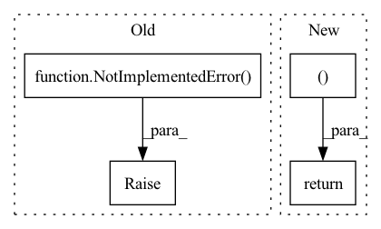

Pattern ID :677
Before Change
output_weights <list<torch.Tensor>>:
output_biases <list<torch.Tensor>>:
raise NotImplementedError()
class ControlConvNet(nn.Module):
def __init__(self, channels, out_channels, kernel_size, stride=None, dilated=False, separable=False, nonlinear="relu", dropout=False, norm=False):
After Change
output_weights.append(x_weights)
output_biases.append(x_biases)
return output_weights, output_biases
class ControlStackedDenseBlock(nn.Module):
def __init__(self, channels, nonlinear=False, dropout=False, norm=False):
super().__init__()In pattern: SUPERPATTERN
Frequency: 3
Non-data size: 4
Instances Fragment ID: 2308167
Project Name: tky823/dnn-based_source_separation
Commit Name: ef24a393e941b1563617f711a1438b31488a1df3
Time: 2021-06-08
Author: 40362510+tky823@users.noreply.github.com
File Name: src/models/cunet.py
M Class Name: ControlDenseNet
N Class Name: ControlDenseNet
M Method Name: forward(2)
N Method Name: forward(2)
M Parent Class: nn.Module
N Parent Class: nn.Module
M File Name: src/models/cunet.py
N File Name: src/models/cunet.py
M Start Line: 347
M End Line: 347
N Start Line: 357
N End Line: 369
Before Change
// Implement stateful ConvLSTM
if hidden_state is not None:
raise NotImplementedError()
else:
// Since the init is done in forward. Can send image size here
hidden_state = self._init_hidden(batch_size=b, image_size=(h, w))
After Change
layer_output = torch.stack(output_inner, dim=int(self.batch_first))
return layer_output, last_state_list
def reset_parameters(self):
for c in self.cell_list:
c.reset_parameters() Fragment ID: 2308166
Project Name: openclimatefix/metnet
Commit Name: 12d0ea12a39fb28fca3d382611857f23f060b5b6
Time: 2022-02-01
Author: jacob@bieker.tech
File Name: metnet/layers/ConvLSTM.py
M Class Name: ConvLSTM
N Class Name: ConvLSTM
M Method Name: forward(3)
N Method Name: forward(3)
M Parent Class: nn.Module
N Parent Class: nn.Module
M File Name: metnet/layers/ConvLSTM.py
N File Name: metnet/layers/ConvLSTM.py
M Start Line: 149
M End Line: 188
N Start Line: 160
N End Line: 182
Before Change
Returns:
output (batch_size, 1, T)
raise NotImplementedError( "Implement forward.")
@property
def num_parameters(self):
_num_parameters = 0After Change
estimated_sources, sorted_spk_vector = self.extract_latent(mixture, sorted_idx, return_all_layers=return_all_layers, stack_dim=stack_dim)
if return_spk_vector:
return estimated_sources, sorted_spk_vector
return estimated_sources
def extract_latent(self, mixture, sorted_idx, return_all_layers=False, stack_dim=1): Fragment ID: 2308168
Project Name: tky823/dnn-based_source_separation
Commit Name: bceeacb692d2f21773f3f8ad7921d5ff890a1403
Time: 2021-11-05
Author: delta9guitar97@gmail.com
File Name: src/models/wavesplit.py
M Class Name: WaveSplitBase
N Class Name: WaveSplitBase
M Method Name: forward(7)
N Method Name: forward(3)
M Parent Class: nn.Module
N Parent Class: nn.Module
M File Name: src/models/wavesplit.py
N File Name: src/models/wavesplit.py
M Start Line: 45
M End Line: 52
N Start Line: 28
N End Line: 48